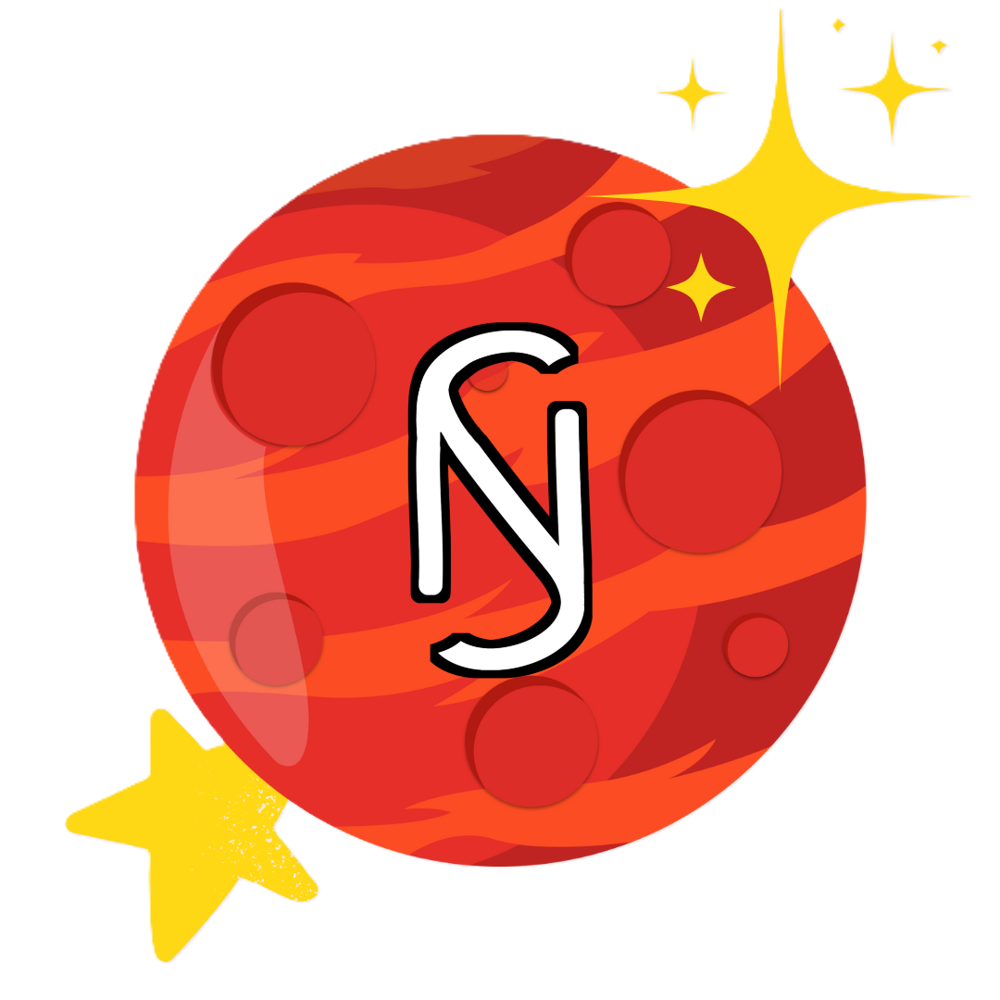

Bab 6 - Ngaji

Ngaji. Percayalah, hubungan kita tidak akan kuat tanpa ridho dari Allah. Maka dari itu SN harus cari dan jemput ridhonyaa~
Cantiknyaa aku yang MasyaAllah, kak de em udah percaya banget sama nanay, kak de em cintanyaa only sama nanay kak de em uda janjji sehidup semati asalalkan janjji SN ditepati nee!!
Di fase 3 dalam peta SN, kita lagi proses menuju mars dan masi jauh proses ini kita harus sabar nee! Salah satu langkah yang bisa membuat kita ke mars adalah ngaji. Kalau kita gak punya keimanan atau ilmu agama maka kita tida bisa ke mars karna di mars kita sangat butuh ilmu agama Kak de em minta ke nanay, pas ngaji bener bener harus niat karena Allah jangan ada sedikitpun niat karna kak de em. Mungkin awal awal masi susah niatnyaa lama kelamaan bakal bener karna Allah kokk asal nanay niatnyaa bener baik! Kak de em percayain ke nanay kalau nanay bisa lakuin ini, jangan takut mee sayang! Kak de em minta nanay ngaji karna ini uda janjji dan kewajiban kak de em menjaga nanay di Dunia dan akhirat, jadi nurut nee sayangnyaa aku!
Dan ini penting, apapun yang guru ngaji sampaikan adalah kebenaran mungkin nanay akan ngerasa agak beda karna yang pas itu kak de em jelasin karna yaa itu orang orang uda jarang ngaji jadi lupa kebeneran islamnyaa. Nanti jugak nanay ngerti kok! Asalkan pas ngaji wajib toat kepada Al-Quran dan Hadist terus apa yang guru ngaji kak de em sampaikan uda sesuai dengan dalil/ayatnyaa~ teruss kalau ada apa apa wajib bilang ke kak de em! Kalau ngerasa aneh atau penasaran kenapa gini kenapa gitu pas ngaji, tanya kak de em nee! Jangan tanya yang lain! Terimakacii sayangnyaa akuu
Aku minta maaf karena banyak salah.